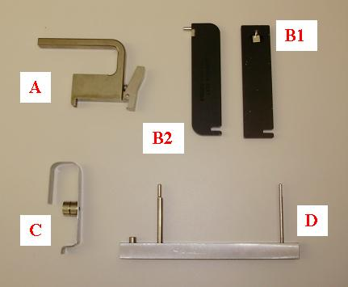
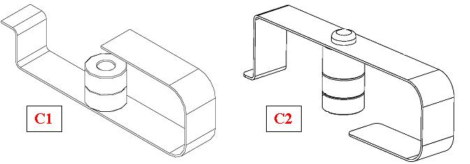

Illustration 6: Special Tools

| Illustration 6 Key | |
| A | Handle |
| B1 | Multi-tool, version 1 |
| B2 | Multi-tool, version 2 |
| C | Bias Tool |
| D | Controlled Seating Tool |
The Handle (Older VDAS detectors) is attached to the heat sink of the module to aid in removal and installation. The heat sink and digital screws can be used to lift the module out if the handle is not available. Newer modules may come with built in handles on the heatsink.
The Controlled Seating Tool is used while installing a module to make sure the alignment pins on the module are centered on the detector collimator to avoid any damage to the detector collimator plates during module insertion. There are two different tools for this application. The wider tool is used for the HDAS_SATURN_64 modules 1-8 and 49-57 and the VCT32 modules.
The Bias tool is attached via magnet to the detector rail after seating the new module. The Bias tool pushes the module against the back detector rail with a known force for proper alignment while the module screws are being torqued. There are two slightly different tools for this application. Refer to Illustration 7 to understand which tool to use.
The Multi-tool is used to aid in clamping the wedge lock after insertion using the notch on one end and for removing light seal clips using the pin on the other end. Different versions of the tool exist but all look very similar and have the same functionality.
Illustration 7: Bias tool reference

| Illustration 7 Key | |
| C1 | Bias tool used with VCT 64 modules |
| C2 | Bias tool used with VCT 32 and HDAS_SATURN_64 modules |